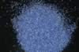

|
|
(For further information on spectroscopy, see:
http://speclab.cr.usgs.gov)
TITLE: Lazurite HS418 DESCRIPT
DOCUMENTATION_FORMAT: MINERAL
SAMPLE_ID: HS418
MINERAL_TYPE: Tectosilicate
MINERAL: Lazurite (Lapis Lazuli) (Sodalite group)
FORMULA: (Na,Ca)7-8(Al,Si)12(O,S)24[(SO4),Cl2,(OH)2]
FORMULA_HTML: (Na,Ca)7-8(Al,Si)12(O,S)24[(SO4),Cl2,(OH)2]
COLLECTION_LOCALITY: Chile
ORIGINAL_DONOR: Hunt and Salisbury Collection
CURRENT_SAMPLE_LOCATION: USGS Denver Spectroscopy Laboratory
ULTIMATE_SAMPLE_LOCATION: USGS Denver Spectroscopy Laboratory
SAMPLE_DESCRIPTION:
(Na,Ca)7-8(Al,Si)12(O,S)24[(SO4),Cl2Cl2,(OH)2(OH)2] Beautiful blue.
IMAGE_OF_SAMPLE:

END_SAMPLE_DESCRIPTION.
XRD_ANALYSIS:
40 kV - 30 mA, 6.5-9.5 keV
File: lazur418.mdi (smear on quartz plate)
Reference: PDF2# 41-1393, 27-88
Found: Wollastonite 2M, lazurite or related species
Comments: Wollastonite peaks are very sharp and show clearly resolved alpha1 and alpha2
components, suggesting excellent crystallinity and compositional homogeneity. Lazurite
peaks are very sharp, but not as strong as those of wollastonite. Profile-based
search-match returned 2M wollastonite, hauyne and lazurite-C as probable hits. The
intensities of the hauyne closely matched the non-wollastonite reflections; those of
lazurite-C did not. Subsequent manual overlay of the six wollastonite patterns in the
PDF2 database onto the non-sodalite-group reflections in HS-418 indicates that the
wollastonite is of 2M, not 1A, structure type. Of the two 2M patterns in the database,
the observed peak intensities better match 43-1460. Only six observed peaks lie clear of
the numerous wollastonite peaks. These six peaks are explained by a primitive cubic
lattice; the cell edge, 9.08 Angstroms, excludes sodalite but leaves other members of the
sadalite group, nosean, lazurite, and hauyne, or their solid solution, as a
possibilities (see Deer and others, 1962). The structure type could not be determined.
END_XRD_ANALYSIS.
COMPOSITIONAL_ANALYSIS_TYPE: None # XRF, EM(WDS), ICP(Trace), WChem
COMPOSITION_TRACE:
COMPOSITION_DISCUSSION:
None.
END_COMPOSITION_DISCUSSION.
MICROSCOPIC_EXAMINATION:
END_MICROSCOPIC_EXAMINATION.
SPECTROSCOPIC_DISCUSSION:
Wollastonite has weak spectral features and none can be detected in the spectrum of this sample.
END_SPECTROSCOPIC_DISCUSSION.
SPECTRAL_PURITY: 1b2c3?4_ # 1= 0.2-3, 2= 1.5-6, 3= 6-25, 4= 20-150 microns
| LIB_SPECTRA_HED: | where | Wave Range | Av_Rs_Pwr | Comment |
|---|---|---|---|---|
| LIB_SPECTRA: | splib04a r 2716 | 0.2-3.0µm | 200 | g.s.= |
| LIB_SPECTRA: | splib05a r 4087 | 0.2-3.0µm | 200 | g.s.= |
| LIB_SPECTRA: | splib06a r 12545 | g.s.= | ||
| LIB_SPECTRA: | splib06a r 12557 | g.s.= |
{kind=link}